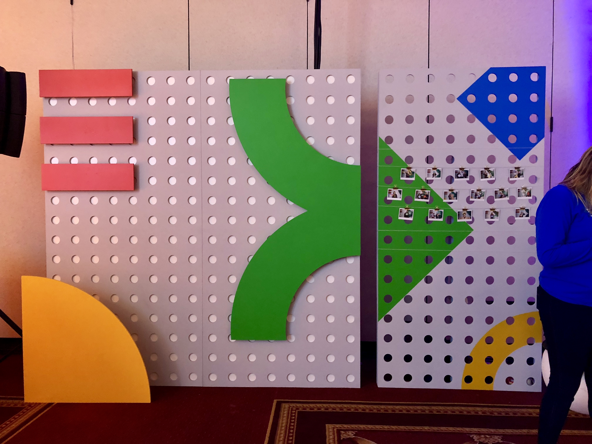

Brand Experiences
Google Cloud Next
My Role: 3D Environmental Design Intern
Group CD: Julian King ACD: Amanda Yuan and Lee Schellenberger
Co Design Intern: Cameron Smith

Google reached out to Jack Morton to create two parties, one for Women in Tech and the other for Diversity and Inclusion in Tech. We created two parties in the same room that transformed while the first party was taking place. The result was two great parties featuring a donut wall, a postcard for young women in tech writing station, an unconventional wine tasting, and several other fun activations.
Details
The main part I worked on was the 3D mock ups for small builds.
 Fringilla nisl. Donec accumsan interdum nisi, quis tincidunt felis sagittis eget. tempus euismod. Vestibulum ante ipsum primis in faucibus vestibulum. Blandit adipiscing eu felis iaculis volutpat ac adipiscing accumsan eu faucibus. Integer ac pellentesque praesent tincidunt felis.
Fringilla nisl. Donec accumsan interdum nisi, quis tincidunt felis sagittis eget. tempus euismod. Vestibulum ante ipsum primis in faucibus vestibulum. Blandit adipiscing eu felis iaculis volutpat ac adipiscing accumsan eu faucibus. Integer ac pellentesque praesent tincidunt felis.